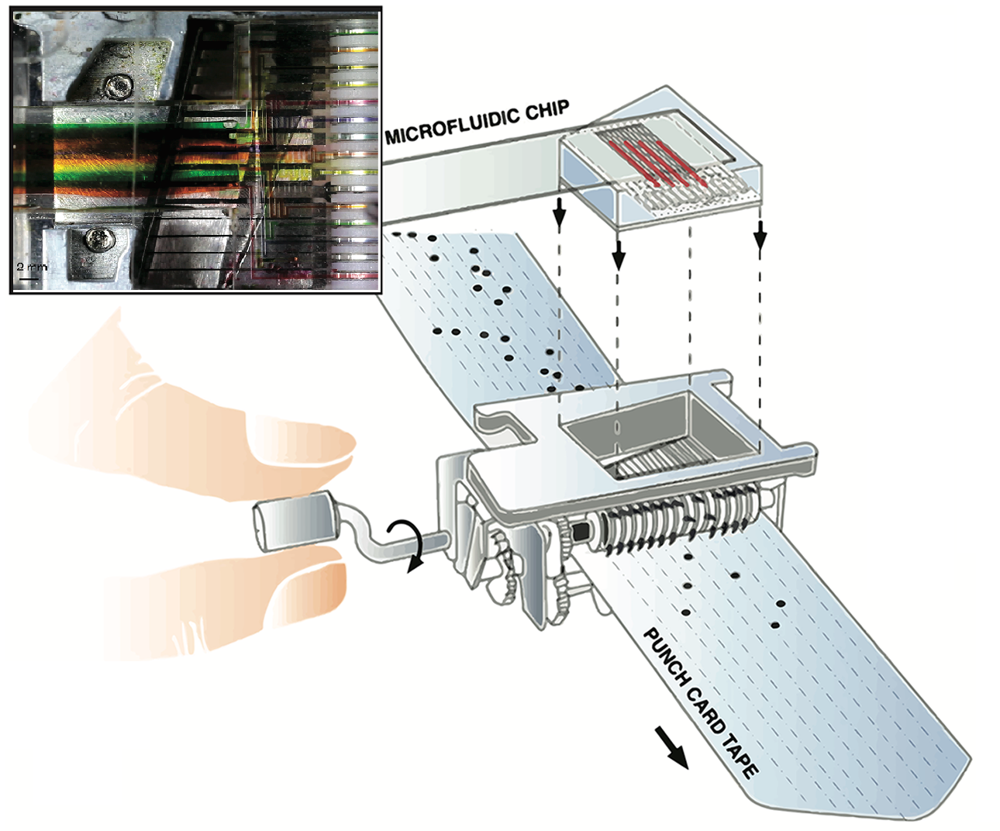

Punch Card Programmable Microfluidics

Here's a nifty idea published in PLOS by George Korir and Manu Prakash. 15 on-chip pumps controlled by a punch card cranked by hand. While the original design is specifically geared towards ease of distribution, one could replace the hand crank with a cheap stepper motor for more reliable control.